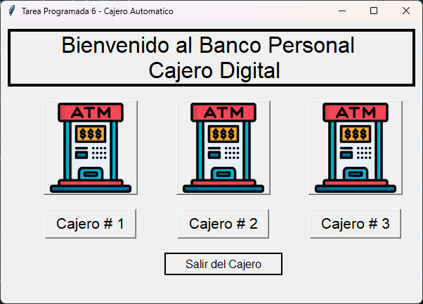
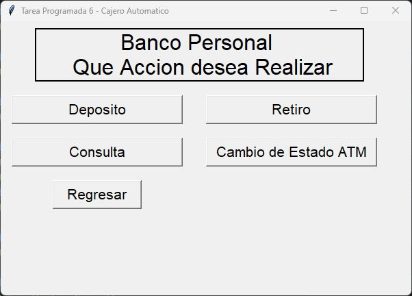

Cajero Automático
con Tkinter
Objetivo del proyecto
Sistema completo de cajeros automáticos desarrollado con Tkinter (interfaz gráfica) y SQL Server 2016.
Tecnologías utilizadas
Lenguaje: Python 3.x
Interfaz: Tkinter (GUI)
Base de datos: SQL Server 2016
Tablas: Usuarios, Bancos, Cuentas
Repositorio fuente
Funcionalidades principales
- Menú principal con selección de cajeros
- Autenticación de usuarios
- Transacciones: depósito, retiro, consulta
- Base de datos relacional
Contexto académico
Profesor: Audie Ruiz Ortega
Materia: TI-141 Programación III
Institución: Colegio Universitario de Cartago